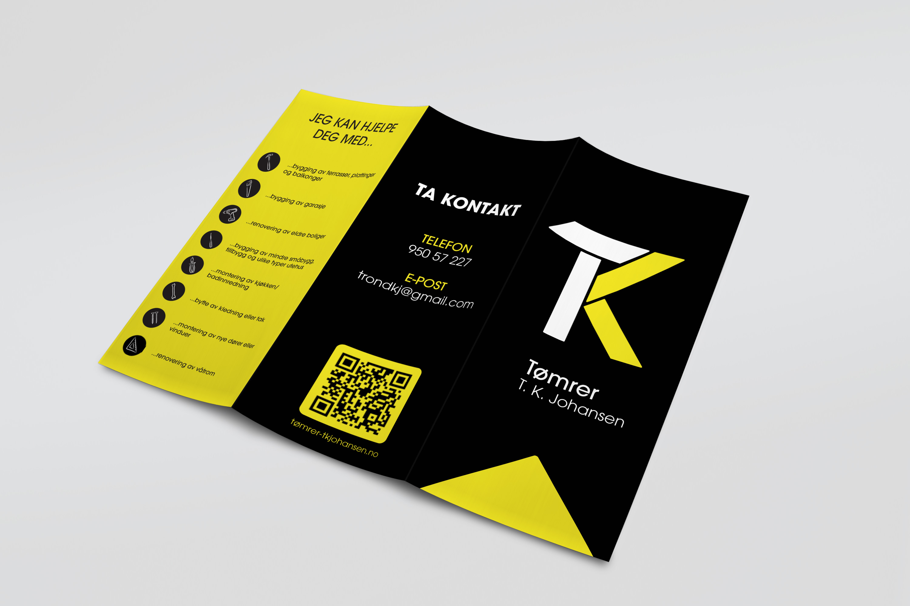
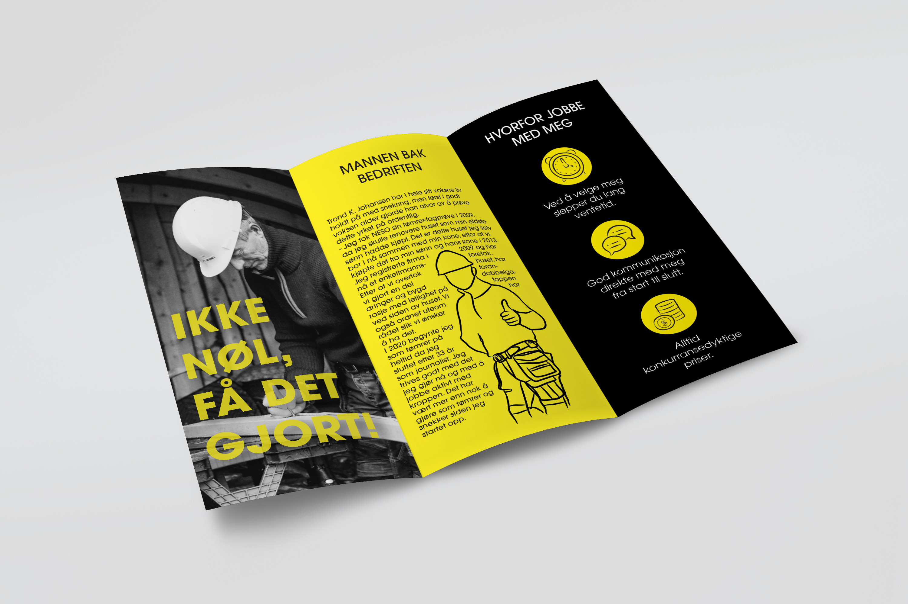

Brand Design
Tømrer T.K. Johansen
← ProjectsThis project involved creating a complete brand identity for a real client. The goal was to develop a cohesive visual system that represents the business while demonstrating my range of design skills, from logo and print to web and promotional materials.






The client for this project was Trond K. Johansen, a carpenter running his own business in a small town in northern Norway.
The business had no existing logo or brand identity, which gave me the opportunity to create a comprehensive visual system including a logo,
business card, brochure, advertisement, car design, clothing, website, and brand style guide.
The main objective was to make the business recognisable, while reflecting Trond’s work and personality. The designs needed to communicate
professionalism, clarity, and a connection to carpentry. His main requests were for a clean, simple, and practical design that would also
work well with his black work vehicle.
I chose a modern and geometric visual style to meet these goals. Clean lines and balanced shapes are central to both styles and can be seen
throughout the brand identity. The logo, for example, combines rectangular forms to form the initials “T” and “K,” creating a geometric yet
memorable mark. To reinforce a masculine and professional vibe, I incorporated bold, structured elements across the design system, ensuring
consistency across all touchpoints.
This project allowed me to explore creative freedom within a real-world client context, applying design thinking to develop a brand that is
both functional and visually distinct.